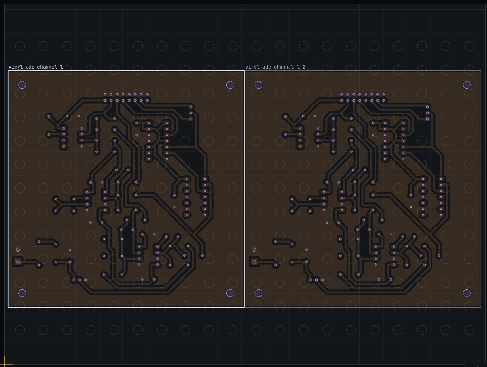

Several boards on one sheet
Two or more designs on one piece of copper, cut in one run: one trace file, one drill file, one cut-out. The drawings are live: add boards, drag them, and watch the checks.
Add and place
- Add (Ctrl+Shift+O), or . It lands to the right of what is there, 4 mm clear, its front edge level with the others. The same folder twice makes two of the board: buck, buck 2.
- Pick Click a board on the bed, or in the list under . The placement fields, the rotation and the arrow keys act on the picked board; the others stay put.
- Move Drag it, or nudge it with the arrow keys: 0.1 mm a press, Shift for 1 mm, Ctrl for 0.01 mm.
- Arrange : Lay them side by side lines them up left to right, 4 mm apart; Butt them together lines them up touching. The first board stays where it is. Centre it on the copper then moves the whole panel onto the middle of the sheet (see where the copper is).
- Take off removes the picked one.
How close may they sit?
Each cut-out runs one cutter width, 0.8 mm, just outside its board. How close two boards sit decides what happens between them, and the checks say so:
| Gap | What the cut-out does | The check |
|---|---|---|
| Overlapping | Nothing: the boards are one shape | Two boards overlap: the export refuses |
| 0 to 0.8 mm | One channel, centred in the gap; each board loses (0.8 − gap) / 2, so 0.4 mm when butted | Two boards share one cut, a warning once each loses 0.2 mm or more |
| 0.8 to 2.6 mm | Two channels, with a strip of stock (gap − 1.6 mm) between them | Nearly touching: the strip can break loose and jam the cutter |
| 2.6 mm or more | Two channels, waste that stays put | The boards keep clear of each other |
The sheet's edge
Once the copper's size and corner are set under , a board edge within 0.5 mm of the sheet's edge is the sheet's edge, and the cut-out leaves that side out: a cutter running along it would be mostly in the air. Hanging that little off the copper is a warning (the board comes out short by that much); any more is a failure.
The files, and the rest of the job
- File names join every board's name:
buck+buck_2_traces.nc, unless you type a Job name under . - VPanel still lists them alphabetically, so the cut-out lands first. Move it to the bottom, drill first if you can: see Cut in VPanel.
- The dry run traces every outline. Isolation sees all the copper at once, so two boards placed close enough to short each other show up in the checks like any other short.
- The probe grid, the screws and the checks see the whole sheet's worth. Setups save every board with its own placement and rotation.

Single-sided only
A double-sided job is one board registered to its holes. Add boards to a single-sided job.